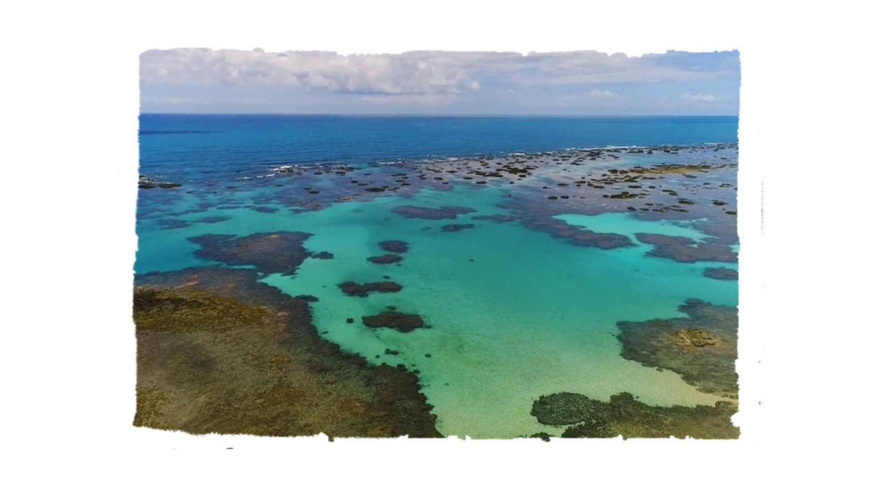
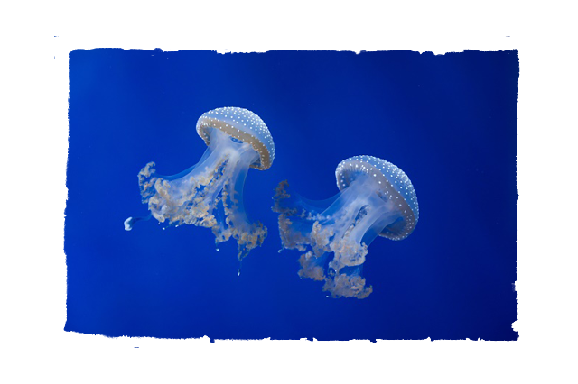
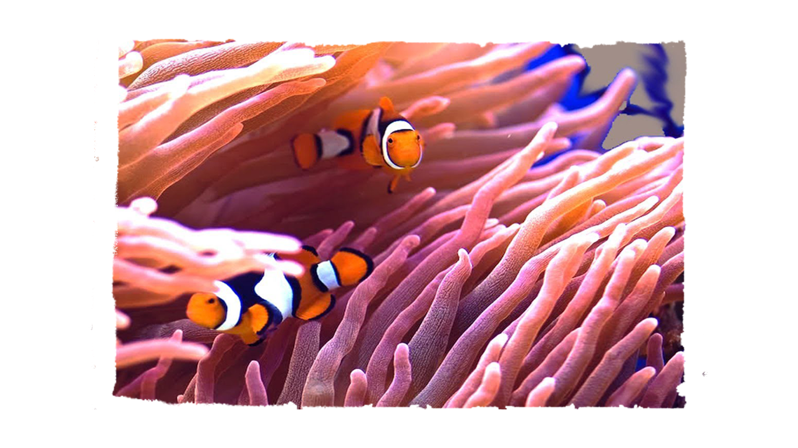

Coral da Amazônia:
até onde vai a ação do homem?
Escrito por Carolina Tawada
10/11/2019
O vazamento do óleo no litoral nordestino não só afetou questão socioeconômica, como também ambiental. Primeiro que, segundo o biólogo André Maia, o óleo chegou por meio da decomposição, à medida que se decompõe, aumenta a sua densidade e assim, atinge uma área muito importante do meio marinho que é a Costa dos Corais, que tem 130 km entre Alagoas e Pernambuco.


O local é a segunda maior aglomeração de arrecifes do mundo e maior unidade de proteção marinha costeira do Brasil, onde existem diversas espécies ameaçadas de extinção. Nesta área há animais fixos, como os corais, esponjas do mar, estes últimos são filtradores da água, ou seja, indicadores de qualidade da água. Caso sejam contaminados, não sobrevivem. Já os responsáveis pela formação de corais, os cnidários. Vão sendo entupidos pelo óleo em sua fase de pólipo, que é sua fase fixa.


Nos recifes de corais são importantes, pois é uma área importante de alimentação, reprodução e refúgio de muitos animais. E também absorvem o gás carbônico (CO2) presente no oceano e o fixam como parte de sua estrutura física, impedindo que mais CO2 seja jogado na atmosfera e aumente o aquecimento global, segundo o Greenpeace.
TAGS: #oceano #seres #anemona #cnidários #coral #notícias